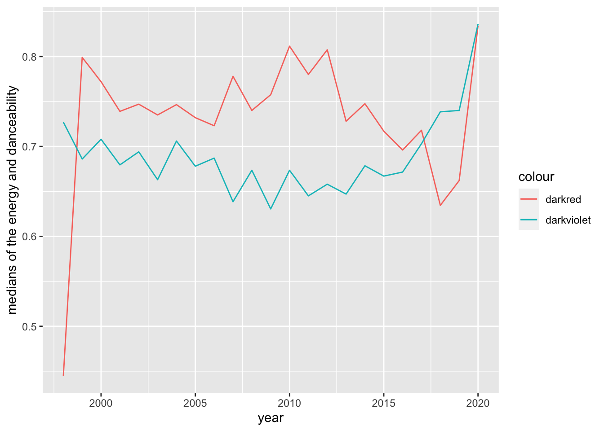

the data set contains 1879 songs of 835. It contains 1879 songs of 59different musical genders.
Question 2
#songs_py = songs per yearsongs_py <- spotify %>%group_by(year) %>%summarise(song)
Warning: Returning more (or less) than 1 row per `summarise()` group was deprecated in
dplyr 1.1.0.
ℹ Please use `reframe()` instead.
ℹ When switching from `summarise()` to `reframe()`, remember that `reframe()`
always returns an ungrouped data frame and adjust accordingly.
`summarise()` has grouped output by 'year'. You can override using the
`.groups` argument.
library(ggplot2)ggplot(data_frame) +geom_line(aes(x=year, y=nrgy, color="darkred")) +geom_line(aes(x=year, y=dnce, color="darkviolet")) +ylab("medians of the energy and danceability")

Exercise 2
dropout <-readRDS("dropout.Rds")
Question 1
age_median_by_g_ms <- dropout %>%group_by(Gender, `Marital status`)%>%summarise(n(), age_med=median(`Age at enrollment`))
`summarise()` has grouped output by 'Gender'. You can override using the
`.groups` argument.
print(age_median_by_g_ms)
# A tibble: 12 × 4
# Groups: Gender [2]
Gender `Marital status` `n()` age_med
<fct> <fct> <int> <dbl>
1 Male single 1367 20
2 Male married 158 37
3 Male divorced 22 40.5
4 Male widower 1 43
5 Male facto union 7 34
6 Male legally separated 1 55
7 Female single 2552 19
8 Female married 221 34
9 Female divorced 69 38
10 Female widower 3 21
11 Female facto union 18 27
12 Female legally separated 5 41
# A tibble: 12 × 4
# Groups: Marital status [6]
`Marital status` `n()` Male Female
<fct> <int> <dbl> <dbl>
1 single 1367 20 NA
2 married 158 37 NA
3 divorced 22 40.5 NA
4 widower 1 43 NA
5 facto union 7 34 NA
6 legally separated 1 55 NA
7 single 2552 NA 19
8 married 221 NA 34
9 divorced 69 NA 38
10 widower 3 NA 21
11 facto union 18 NA 27
12 legally separated 5 NA 41